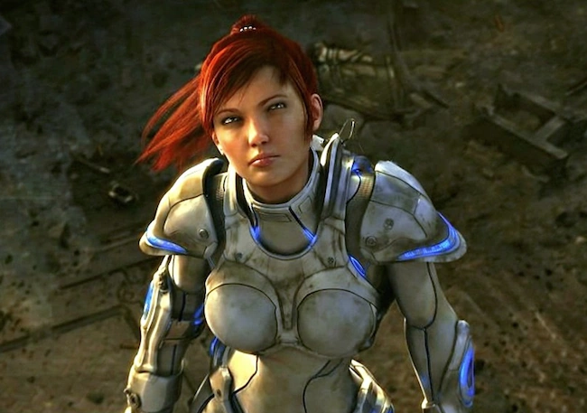
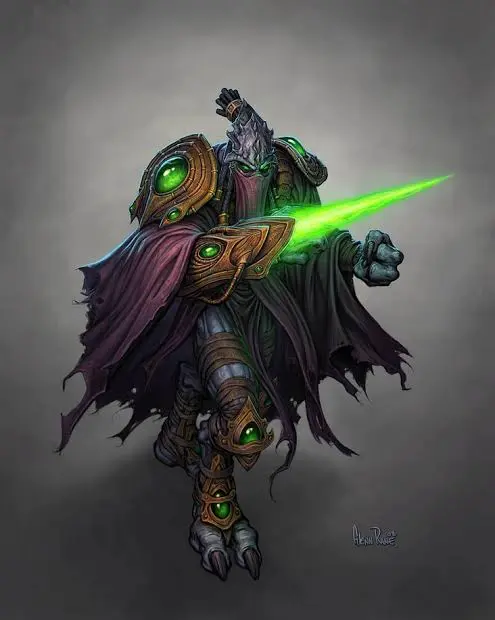
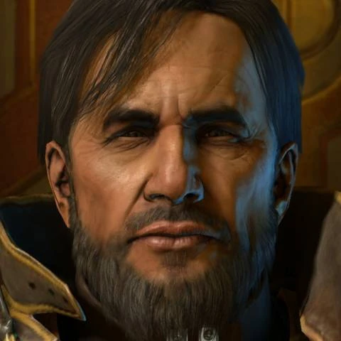
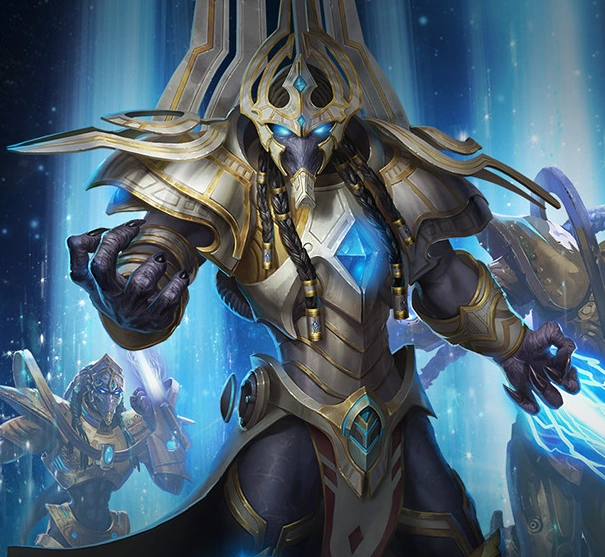
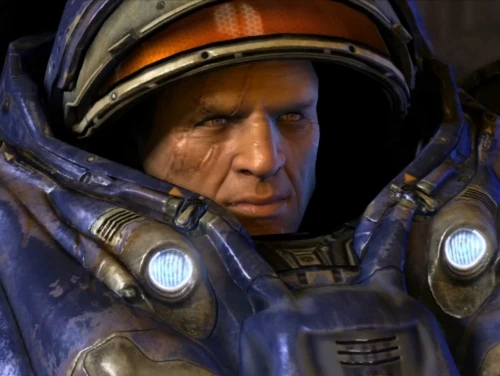
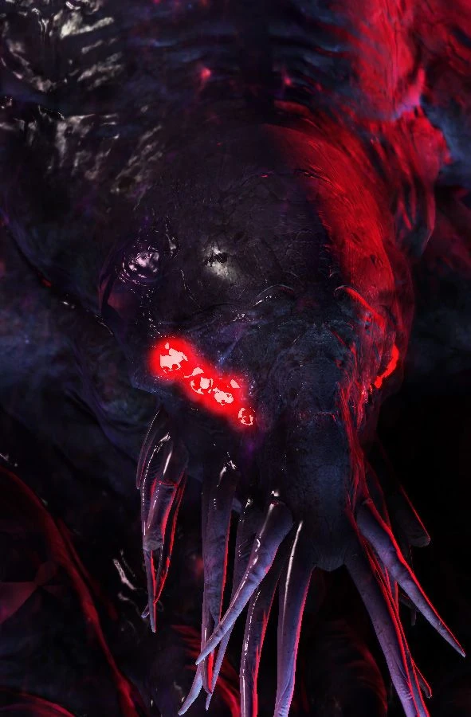
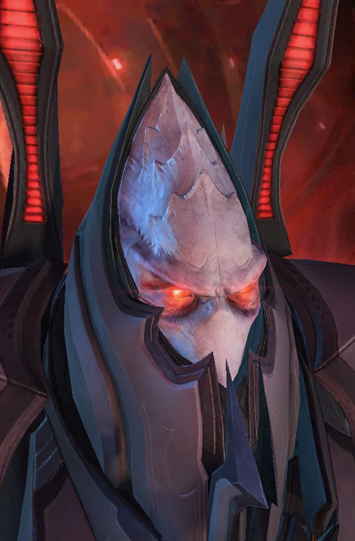

Джим Рейнор
Главный герой вселенной StarCraft, прошедший путь от колониального маршала до лидера повстанцев и легендарного космического ковбоя. После предательства Арктура Менгска, который бросил Сару Керриган на растерзание зергам, Джим основал собственное движение «Рейдеры Рейнора» для борьбы с тиранией.

Сара Керриган
Один из ключевых персонажей вселенной StarCraft, прошедшая путь от сильнейшего терранского псионика-призрака до грозной предводительницы инопланетного Роя. После жестокого предательства Арктура Менгска на Новом Геттисберге она была захвачена зергами, которые генетически трансформировали её в безжалостную Королеву Клинков.

Зератул
Прославленный темный прелат расы неразим во вселенной StarCraft, посвятивший свою многовековую жизнь служению сородичам и поискам древних пророчеств. Именно он помог преодолеть раскол между изгнанными темными тамплиерами и протоссами Айура, заключив ключевой союз с вершителем Тассадаром для борьбы с зергами.

Арктур Мемск
Один из главных антагонистов вселенной StarCraft, прошедший путь от амбициозного золотоискателя до расчетливого революционера и первого императора Доминиона терранов.

Артанис
Один из главных протагонистов вселенной StarCraft, ставший самым молодым вершителем и легендарным иерархом, объединившим расу протоссов. Воспитанный на идеалах своего наставника Тассадара, он мужественно руководил эвакуацией выживших на Шакурас после катастрофического падения Айура под натиском зергов.

Тайкус Финдли
Харизматичный бывший солдат Конфедерации, осужденный преступник и давний боевой товарищ Джима Рейнора во вселенной StarCraft.

Амун
Древнее космическое божество и главный антагонист вселенной StarCraft, также известный как Тёмный Бог или Падший зел-нага. Будучи пресыщенным Бесконечным Циклом перерождений своей расы, он возненавидел саму суть вселенского порядка и решил погрузить галактику в забвение, чтобы затем перестроить её по собственному подобию.

Аларак
Высокомерный, коварный и прагматичный Владыка фракции Талдаримов, жестоких протоссов, долгое время слепо поклонявшихся Падшему богу. Осознав, что Амун предал свой народ и планирует полностью уничтожить их, Аларак заключил временный союз с иерархом Артанисом, чтобы свергнуть прежнего правителя Малаша в священном ритуальном поединке Рак'Шир